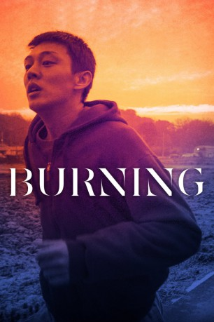

#11926 Burning
 
 IMDB-Wertung: 7.6 / 10
IMDB-Wertung: 7.6 / 10  Tomatometer: 95
Tomatometer: 95  Metascore: 90
Metascore: 90 
Nach seinem Studium kehrt der junge Jongsu in sein Heimatdorf zurück. Ein zufälliges Wiedertreffen mit seiner Schulkameradin Haemi führt zu einer gemeinsamen Nacht. Jongsus Gefühle sind geweckt, doch der Zeitpunkt ist ungünstig – Haemi steht kurz vor einem lange geplanten Trip nach Afrika. Sehnsüchtig erwartet Jongsu den Tag ihrer Rückkehr. Doch am Flughafen begrüßt ihn Haemi mit einem anderen Mann an ihrer Seite. Auf der Reise hat sie den wohlhabenden Ben kennengelernt, der von nun an nicht mehr von ihrer Seite weicht. Als Haemi plötzlich spurlos verschwindet, stürzt die verzweifelte Suche nach ihr Jongsu in ein Labyrinth aus Misstrauen und Paranoia.
Jahr: 2018
Dauer: 148 Minuten
FSK: 16
Land: Süd-Korea Studio: capelight picturesTonspuren:
Untertitel: Deutsch,
Auflösung: 1080p (1920x808) Größe: 5806 MB
Genre: Drama, Mystery
Regisseur: Chang-dong Lee
Drehbuch: Jungmi Oh, Chang-dong Lee, Haruki Murakami
Soundtrack: Mowg
Darsteller:
- Ah-in Yoo als Lee Jong-su
 Steven Yeun als Ben
Steven Yeun als Ben- Jong-seo Jun als Shin Hae-mi
- Soo-Kyung Kim als Yeon-ju
- Seong-kun Mun als Lawyer
- Donald Trump als Himself (archive footage) (uncredited)
- Seung-ho Choi als Lee Yong-seok
- Bok-gi Min als Judge
- Soo-Jeong Lee als Prosecutor
- Hye-ra Ban als Jong-su's Mom
- Mi-Kyung Cha als Hae-mi's Mom
- Bong-ryeon Lee als Hae-mi's Sister
- Won-Hyung Jang als Won-hyeong
- Wonhyeong Jang als Won-hyeong
- Seok-Chan Jeon als Seok-chan
- Joong-ok Lee als Patrolman
- Ja-Yeon Ok als Ja-yeon
Datei: X:\NEU\Burning (2018, FSK16, 1920x808).mkv seit 26.10.2019
 Es gibt insgesamt 187 Filme in der Gruppe 'NEU'
Es gibt insgesamt 187 Filme in der Gruppe 'NEU'